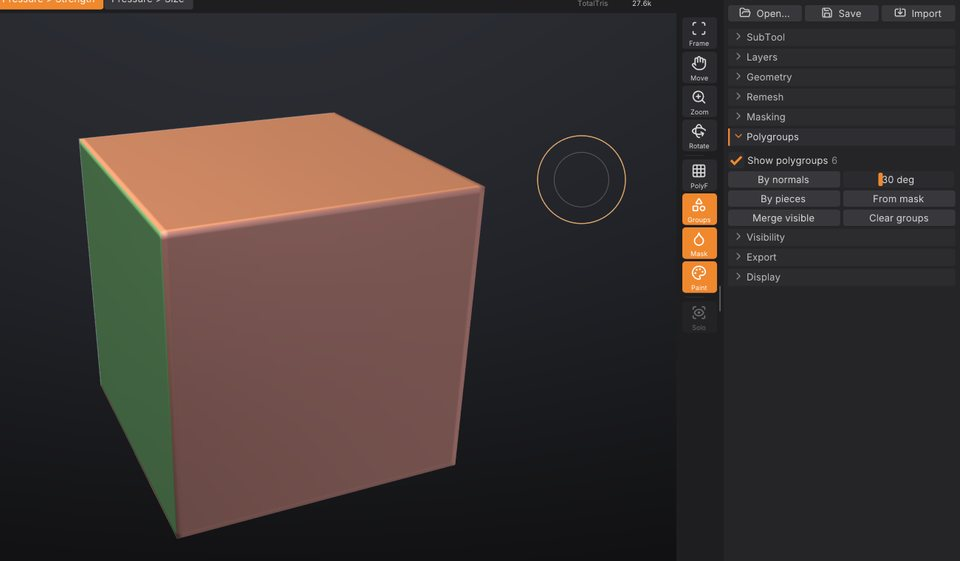

Polygroups and visibility
Polygroups divide a SubTool's surface into named regions, shown as flat colours when you turn them on. You use them to hide and isolate parts of a model so you can reach what you want to sculpt, to build masks, and to split a model into SubTools. This chapter covers creating polygroups, the Ctrl+Shift visibility gestures and the Tool > Polygroups and Tool > Visibility controls.


Show polygroups#
Click Groups in the right shelf to colour each polygroup of the active SubTool. The same toggle is Show polygroups in Tool > Polygroups and Show Polygroups in the Render palette. The grouping buttons turn the colours on for you, so you see the result straight away.
The number next to Show polygroups is how many polygroups are visible right now.
A mesh without polygroups is one group. Polygroups come from:
- the grouping buttons below;
-
OBJ files: each
ggroup becomes a polygroup, as ZBrush writes them (SculptForge also writes polygroups asggroups when it exports OBJ); -
.GoZfiles from ZBrush and SculptForge projects, which keep polygroups.
Create polygroups#
Open Tool > Polygroups. Grouping works on the visible part of the SubTool only; hidden parts keep their groups. So you can isolate one part and regroup just that part.
| Control | What it does | Command |
|---|---|---|
| By normals | A new group wherever the surface turns more than the angle next to it (1 to 90 degrees, default 30). Each flat side of a box becomes its own group. | polygroup_auto_by_normals |
| By pieces | One group per disconnected piece, such as separate eyes or buttons in one mesh. | polygroup_by_connectivity |
| From mask | Masked triangles move into a new group. | polygroup_from_mask |
| Group by UVs | One group per UV island: triangles that touch without a UV seam between them share a group. Needs UVs (Tool > Texture Map > Auto UV or an imported model's). | polygroup_uv |
| Merge visible | Everything visible becomes one group. | polygroup_merge_visible |
| Clear groups | Remove all polygroups; the whole SubTool becomes one group again. | polygroup_clear |
Each button is one undo step.
Group a region you painted#
- Paint a mask over the region with Ctrl (see Masking).
- Click From mask in Tool > Polygroups.
- Ctrl + drag on the background to clear the mask.
Hide and show parts#
Visibility is the main reason to have polygroups: hide what is in the way, sculpt what's left, then show everything again. Hidden parts can't be sculpted, painted or masked, so hiding also protects them.
All of the gestures use Ctrl+Shift in the viewport (Cmd+Shift on macOS):
| Gesture | Effect |
|---|---|
| Ctrl+Shift + click a polygroup, everything shown | Isolate it: show only that group. |
| Ctrl+Shift + click a polygroup, something hidden | Hide that group (as in ZBrush). |
| Ctrl+Shift + click the isolated group again | Invert the visibility: show everything else instead. |
| Ctrl+Shift+Alt + click a polygroup | Hide that group. |
| Ctrl+Shift + click the background | Show everything. |
| Ctrl+Shift + drag a rectangle on the background, around nothing | Reverse the visibility. |
| Ctrl+Shift + drag | Keep what's inside the rectangle (or lasso), hide the rest. The shape is drawn green. |
| Ctrl+Shift+Alt + drag | Hide what's inside the rectangle (or lasso). The shape is drawn red. |
Whether a drag draws a rectangle or a lasso is set by SelectRect and SelectLasso at the top of Tool > Visibility (SelectRect by default), or, as in ZBrush, with Ctrl+Shift held: the left shelf then shows the selection brush, and clicking the brush tile (or pressing B) or the stroke tile picks SelectRect or SelectLasso. With SelectLasso, the drag traces a free-hand outline that closes back to where you started; drag around a part as if you were drawing round it with a pen. The drag can start on the model or on the background.
Both shapes work in screen space: a triangle counts as inside when its centre falls inside the shape as you see it, including triangles on the far side of the model. A lasso that crosses itself leaves out the areas it encloses twice. You can press or release Alt while dragging; what counts is whether it is held when you let go.
SculptForge refuses a change that would hide everything, as ZBrush does. Every visibility change is one undo step, so Ctrl+Z brings back what you just hid.
The Visibility sub-palette#
Open Tool > Visibility:
| Control | What it does | Command |
|---|---|---|
| SelectRect / SelectLasso | The shape Ctrl+Shift + drag draws: a rectangle or a free-hand lasso. | hide_rect / hide_lasso |
| Show all | Show every hidden part again. Available when something is hidden. | show_all |
| Invert visible | Hide what is visible and show what is hidden. | invert_visibility |
| Delete hidden | Permanently remove the hidden triangles from the mesh. Undoable. | delete_hidden |
Delete hidden keeps every attribute of what remains (mask, polypaint, polygroups, UVs and sculpt layers). Use it to cut away parts of a scan or a generated model, or to remove the inside of a mesh after you isolated the outside.
Typical workflows#
Work on one part of a character#
- Click By pieces (for a mesh made of separate parts) or By normals.
- Ctrl+Shift + click the part you want, for example the head.
- Sculpt. The rest of the body is hidden and can't be touched.
- Ctrl+Shift + click the background to show everything.
Clean up a scan or a generated model#
- Turn the model so the unwanted piece is on screen.
- Ctrl+Shift+Alt + drag a rectangle over it to hide it. For an awkward shape, pick SelectLasso in Tool > Visibility first and draw around it.
- Click Delete hidden in Tool > Visibility.
Split a model into SubTools#
Group the model, then click Split groups in Tool > SubTool: each polygroup becomes its own SubTool. Split parts does the same by disconnected piece. See SubTools.
Polygroups and other tools#
- Masking: By polygroup in Tool > Masking masks one group (see Masking).
- Brushes and polypaint skip hidden faces.
- Projects save polygroups and what's hidden; GoZ and OBJ carry polygroups to and from ZBrush.
- Each SubTool has its own polygroups and visibility. To show and hide whole SubTools, use the eye icons and Solo in Tool > SubTool.
Polygroups from a script#
| Command | Options |
|---|---|
polygroup_auto_by_normals | angle (1-180 degrees, default 30) |
polygroup_by_connectivity, polygroup_uv, polygroup_from_mask, polygroup_merge_visible, polygroup_clear | |
isolate_polygroup, hide_polygroup | group (required): the polygroup id |
show_all, invert_visibility, delete_hidden | |
hide_rect | x0 y0 x1 y1 (-1 to 1, y up), inside, optional view_proj matrix; without a view the rectangle spans the mesh seen from the front |
hide_lasso | points (required): the outline as "x0 y0 x1 y1 ...", at least 3 points in the same -1 to 1 space; inside, view_proj as for hide_rect |
When you isolate or hide a group in the viewport, the console (`) shows the command with the group's id, for example isolate_polygroup group=3, which you can reuse in scripts.
sculptforge-cli -c 'open path=robot.obj; polygroup_by_connectivity; subtool_split_groups; save_project path=robot.sfproj'See also#
- Masking: build masks from polygroups and polygroups from masks
- SubTools: split by groups, show, hide and solo whole SubTools
- Keyboard and mouse reference